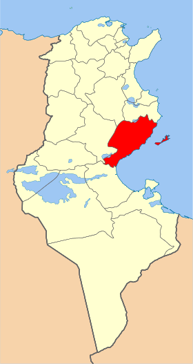
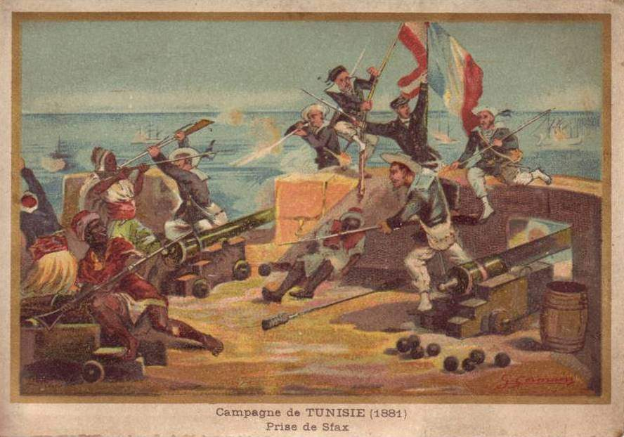
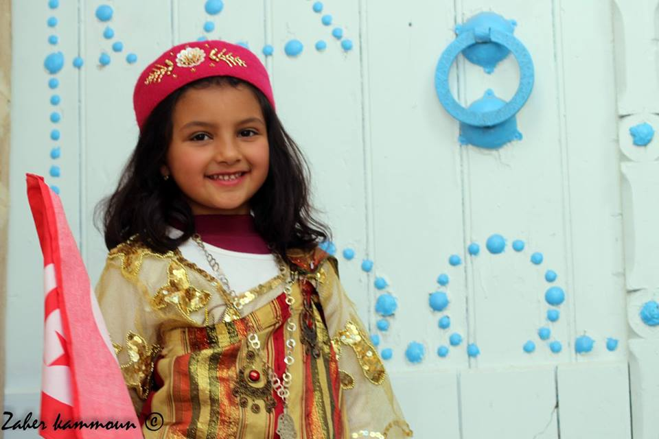
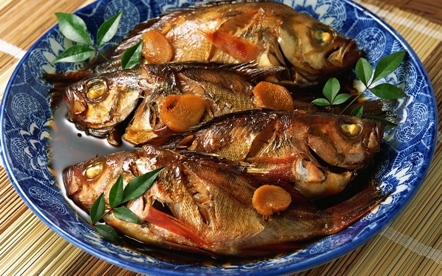
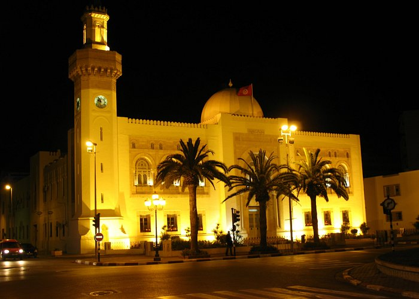
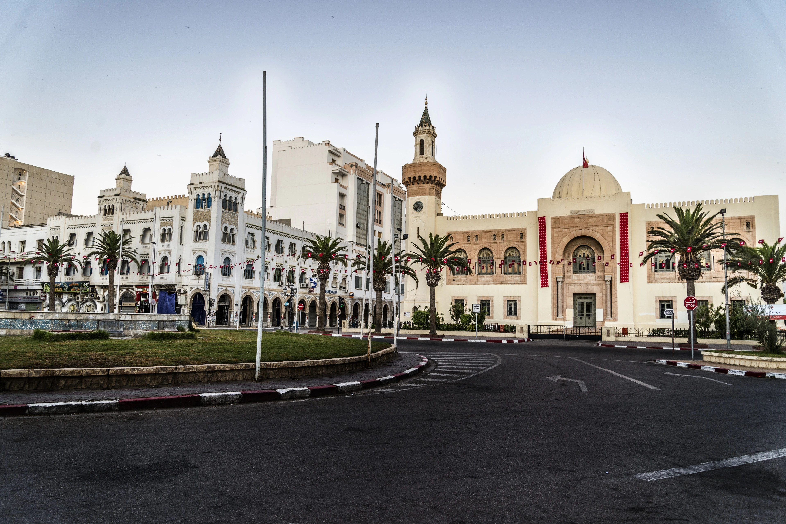

Sfax
Sfax, deuxième ville et centre économique de Tunisie, est une ville portuaire de l'est du pays située à environ 270 kilomètres de Tunis. Riche de ses industries et de son port, la ville joue un rôle économique de premier plan avec l'exportation de l'huile d'olive et du poisson frais ou congelé. Sfax est une cité d'affaires et compte certains sites à vocation touristique, tels que la médina, Thyna et ses salines, malgré la longue présence des usines de traitement du phosphate.
La grande mosquée de Sfax
Beb Diwan
Beb Jebli
Musée Al Kasbah
Quelques chiffres
Superficie
7 545 km²
Nombre de maisons
35 000
Habitants
330 440
Localisation
La ville de Sfax est située au Centre-Est de la Tunisie, sur le rivage de la mer Méditerranée. Son territoire est délimitée par Agareb à l'Ouest, Menzel Chaker au Nord, Sakiet Ezzit et Sakiet Eddaïer à l'Est8. le climat semi-aride, l'importante circulation automobile10 et le contexte du relief et des vents aggrave de manière différenciée la pollution de l'air dans l'agglomération.

Histoire
Sfax était connue sous son nom berbère « Syphax » et son nom romain « Taparura ». C’est une ville où se côtoient différents peuples et de nombreuses civilisations. La vie dans les villes romaines de Tina et Taparura dépendait de l'agriculture, ainsi que de la pêche, où la culture des olives était florissante et de la culture de la vigne et des figues. De cela découlait, un commerce florissant avec les marchands d’Athènes et d’Alexandrie. Les îles Kerkennah étaient la barrière naturelle qui sert à la protection de la côte de Taparura, ce qui a considérablement enrichi sa vie économique et culturelle. L’entrée de Sfax dans l'histoire écrite était en 856 après JC, où les murailles de la ville et la Grande Mosquée ont été construites. Au 12ème siècle, les Normands de Sicile ont dominé la ville. Mais cela n'a pas duré longtemps car il a été libéré sous le règne d'Abd al-Muemmin ibn Ali, fondateur de l'État almohadiste. - Période Hafsid: a été témoin de la restauration de monuments et de la reconstruction de murs en pierre. Le commerce a également prospéré, ce qui est devenu une activité majeure pour la population de la ville de Sfax.

Culture

hover me
hover me
hover me
hover me